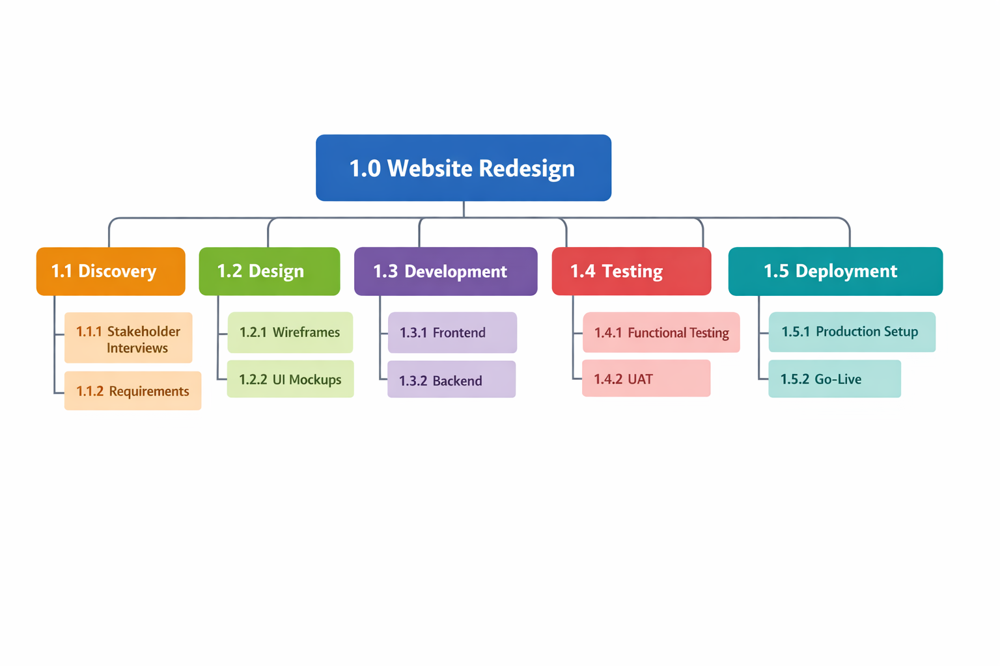

Transform complex projects into clear, manageable deliverables — essential for every Scrum Master's toolkit.
A Work Breakdown Structure (WBS) is one of the most powerful tools in project management. It transforms a complex project into a clear, structured map of deliverables, enabling teams to plan effectively, estimate accurately, and deliver with confidence. Whether you work in a traditional or agile environment, a well-designed WBS lays the foundation for successful execution.
A Work Breakdown Structure (WBS) is a hierarchical decomposition of a project into smaller, manageable components. It breaks the overall project scope into work packages—clear, actionable pieces of work that teams can estimate, assign, and deliver.
Think of the WBS as the project's "family tree":
A WBS focuses on deliverables, not activities. Instead of listing tasks like "design UI," a WBS lists the deliverable: "User Interface Design."

A well-structured WBS provides clarity, alignment, and control throughout the project lifecycle. It is useful because it:
Large projects can feel overwhelming. A WBS divides the work into smaller chunks that are easier to understand, estimate, and manage.
Each work package can be estimated individually, leading to more accurate timelines and budgets.
The WBS defines exactly what is included in the project—and what is not. This reduces scope creep and misunderstandings.
Teams gain a shared understanding of deliverables, dependencies, and responsibilities.
Progress can be monitored at multiple levels—phase, deliverable, or work package—making it easier to identify risks early.
Even in Scrum environments, a WBS helps inform the Product Backlog, supports release planning, and ensures all deliverables are accounted for before sprinting begins.
Even though Agile teams focus on iterative delivery rather than upfront planning, a WBS still adds real value:
A WBS helps identify all major deliverables early, ensuring the Product Backlog captures everything the team must deliver.
Breaking the project into deliverables makes it easier to translate them into Epics, Features, and User Stories.
A WBS gives a high-level view of the full product, helping teams plan releases and understand dependencies.
It provides a simple, visual way to show what the team will deliver—useful for sponsors, product owners, and non-technical stakeholders.
By decomposing work early, teams can spot complex areas, unknowns, or dependencies before sprinting begins.
A WBS should list what will be delivered, not how the team will do the work.
Work packages that are too large are hard to estimate; too small creates unnecessary complexity.
A WBS built without the team or product owner often misses key deliverables.
WBS creation should be collaborative—team involvement improves accuracy and buy-in.
As scope evolves, the WBS should be updated to reflect new information or changes.
Some projects work better with phase-based WBS, others with deliverable-based. Forcing the wrong structure leads to confusion.